The Story
Thiruvalluvar, the poet-sage of Tamil literature, authored the Thirukkural, a universal scripture on virtue, wealth and love. The 133-feet statue stands as a tribute to his timeless wisdom that transcends all boundaries.
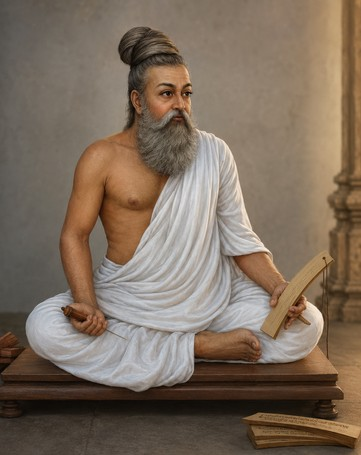
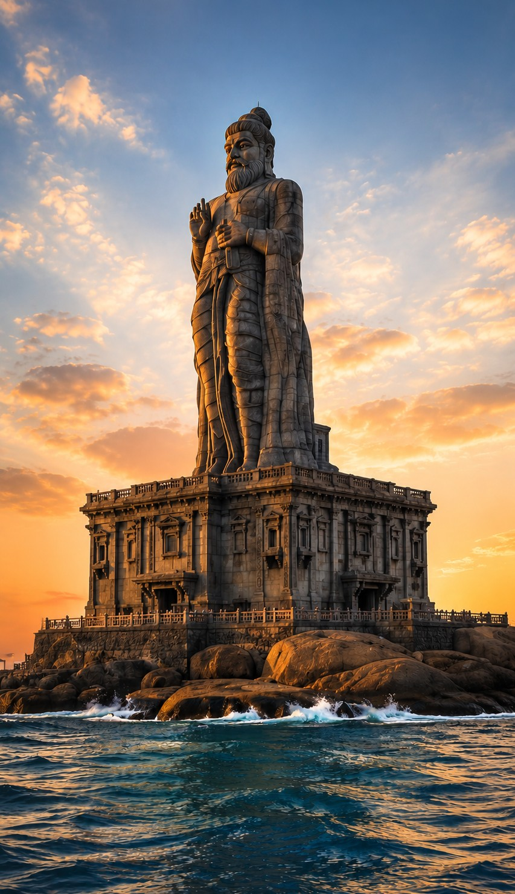
A timeless tribute to the wisdom of Thiruvalluvar and the eternal values of the Thirukkural.
Thiruvalluvar, the poet-sage of Tamil literature, authored the Thirukkural, a universal scripture on virtue, wealth and love. The 133-feet statue stands as a tribute to his timeless wisdom that transcends all boundaries.

The statue stands on a rock island about 500 meters from the shore.
It is visible from almost every part of the Kanyakumari coast.
More than 3000 tons of granite stones were used.
Engineered to withstand strong sea winds and waves year-round.
One of the tallest literary statues in the world.
Built using advanced marine engineering techniques.
Thiruvalluvar is revered as one of the greatest philosophers of Tamil literature. His work, the Thirukkural, is a couplet-based scripture that speaks with equal grace on righteousness, prosperity and love — a moral compass embraced far beyond the borders of Tamil Nadu.
The Tamil Nadu government commissioned this monumental statue as a public tribute to that legacy. Rising above the meeting point of the seas, it was conceived as a symbol of enduring wisdom for every visitor who arrives at India's southern tip.
Years of planning, careful stonework and marine engineering brought the vision to life. Its inauguration in the year 2000 turned an isolated rock islet into one of the most recognised cultural landmarks of the country.
The poet-sage lives and composes verses that will shape Tamil thought for centuries.
1,330 couplets across 133 chapters distill virtue, wealth and love into timeless wisdom.
A vision emerges to honour the sage with a statue at land's end in Kanyakumari.
Sculptor V. Ganapathi Sthapati leads the design guided by classical Shilpa Shastra.
Blocks of granite are shaped on shore and shipped to the rock islet for assembly.
On 1 January 2000, the statue is unveiled to mark the new millennium.
A symbol of Tamil identity welcoming travellers from around the world.
The statue rises 133 feet from base to crown — a 95-foot sculpted figure resting on a 38-foot pedestal shaped like a temple sanctum. Every block is carved from hard granite, chosen for its ability to endure the salty coastal air for generations.
Craftsmen followed principles of classical Shilpa Shastra, shaping robes, ornaments and facial features by hand. The pedestal echoes the mandapa halls of Tamil temples, so the monument feels rooted in the region's architectural memory.
Because the site sits on an exposed rock islet, the structure was engineered to withstand strong coastal winds and lashing waves. Marine engineering, careful anchoring and thoughtful load distribution allow it to stand poised above the sea.
The 133-foot height is no accident — it mirrors the 133 chapters of the Thirukkural. Standing before the statue is like standing before the work itself: one foot for every chapter, one chapter for every lesson.
Three raised fingers of the right hand represent the three great themes of the scripture — Aram (virtue), Porul (wealth) and Inbam (love). Together, they form the Tamil philosophy of a complete and balanced life.
Facing the meeting point of the seas, the sage seems to bless all who arrive here. For the Tamil people, this is more than a monument — it is a public declaration that literature and ethics are worth building for.
Step off the ferry and you feel it instantly — the wind salted with the sea, the sky opening wide, and the calm weight of stone rising above you. The islet is small, but the moment feels vast.
At sunrise, warm light spills across the sage's shoulders and the ocean turns gold. At sunset, the entire coast glows behind the statue — a scene that stays with travellers long after they head home.
Photographers come for the silhouette. Pilgrims come for the quiet. Families come for the boat ride. Everyone leaves with the same soft impression: a sense of scale, of place, of purpose.
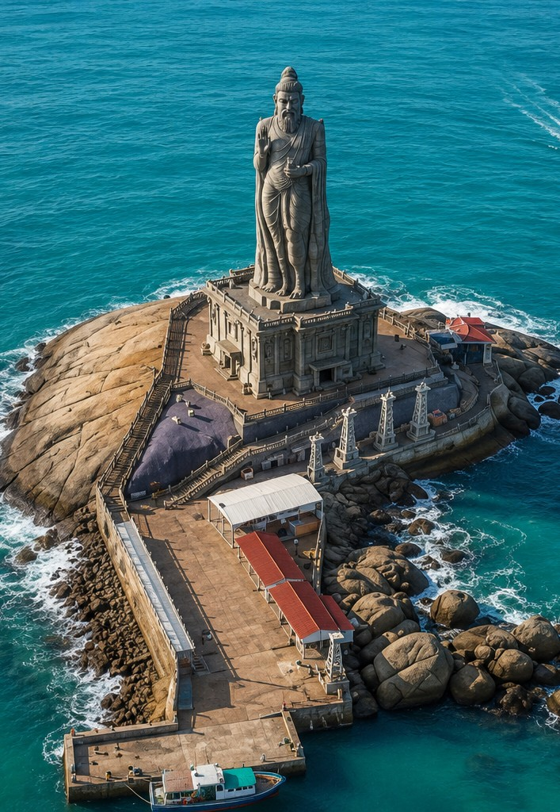
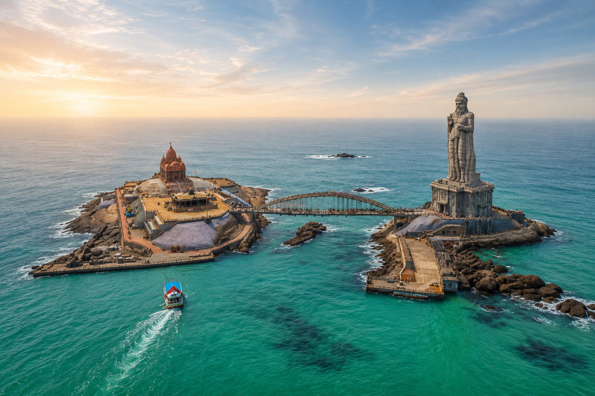
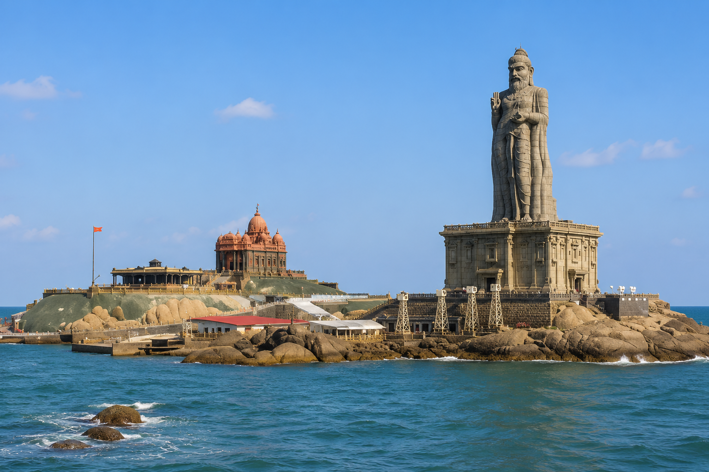
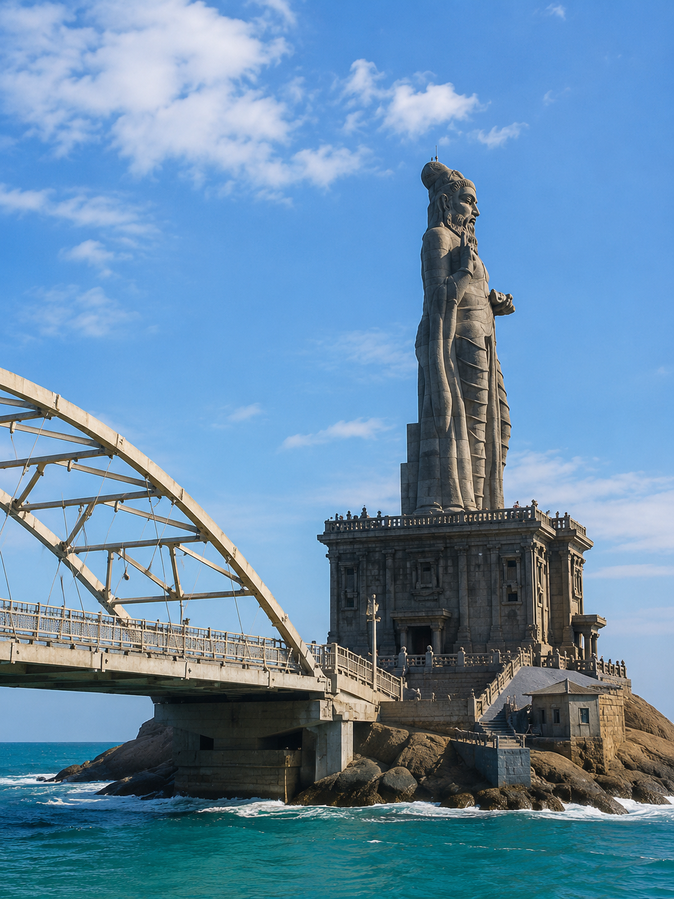
Sunrise and golden hour deliver the most cinematic light.
Plan 60–90 minutes to enjoy the site without rushing.
Look for the three raised fingers and the pedestal carvings.
Wear grippy footwear — the rocks stay damp near the sea.
Speak softly — many visitors treat this as a place of reflection.
Carry back everything you bring — protect this fragile coast.
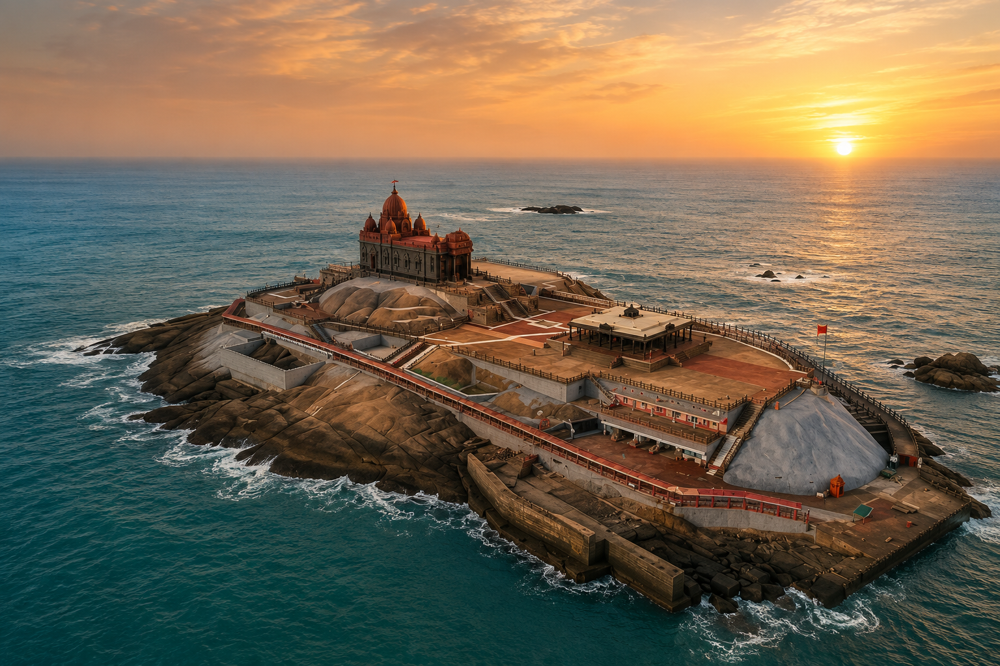
A serene meditation hall on the adjacent rock islet.
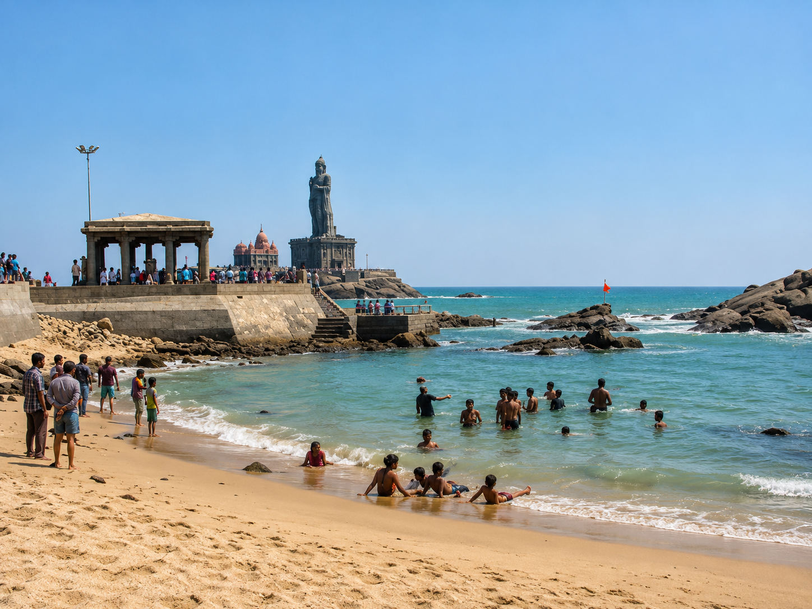
Multicoloured sands where three seas softly meet.
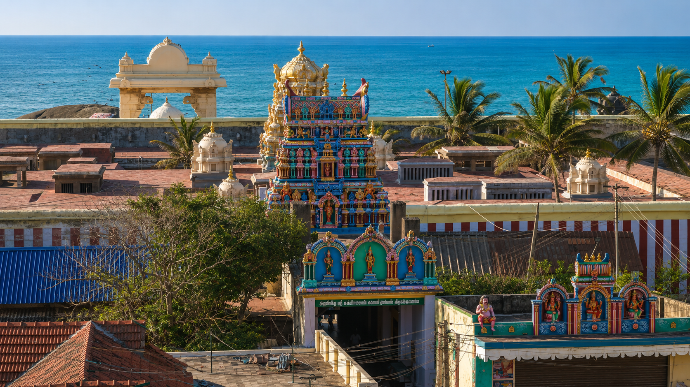
A centuries-old shrine at the very tip of the peninsula.
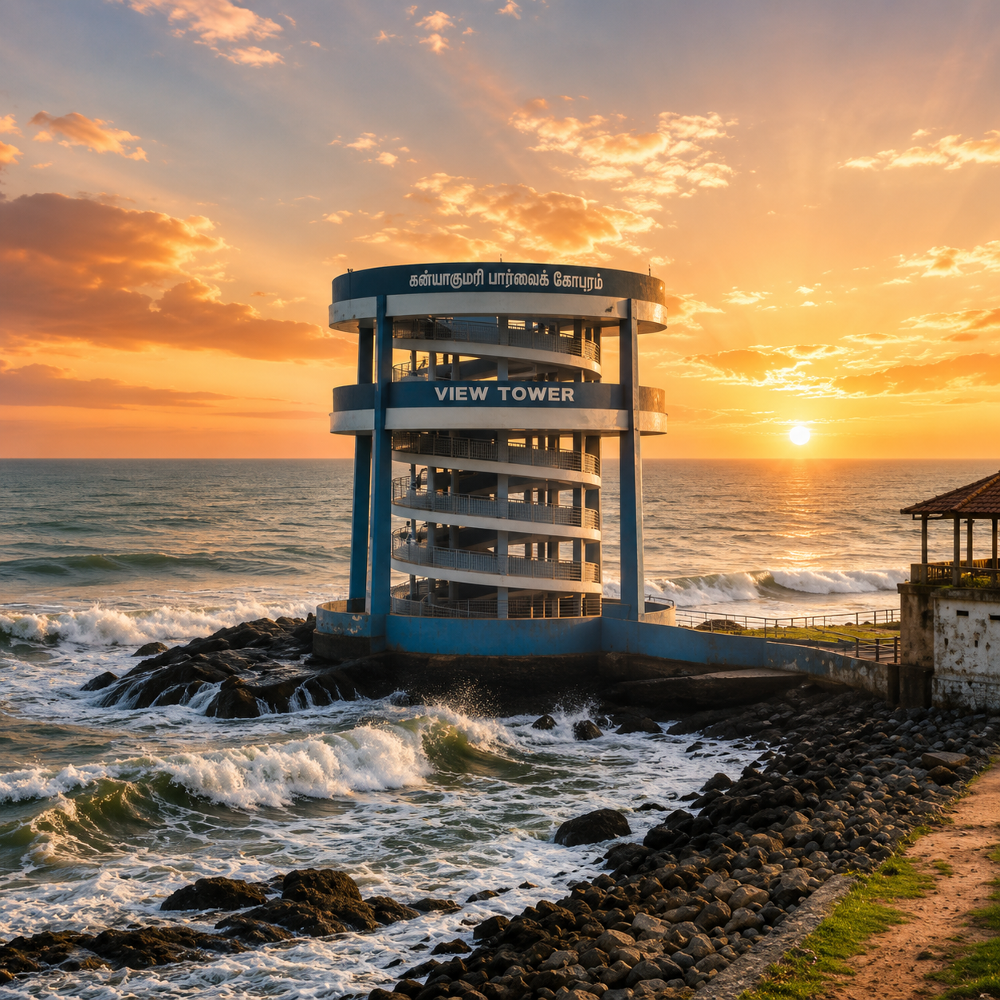
A cliffside deck famed for its unforgettable dawns.
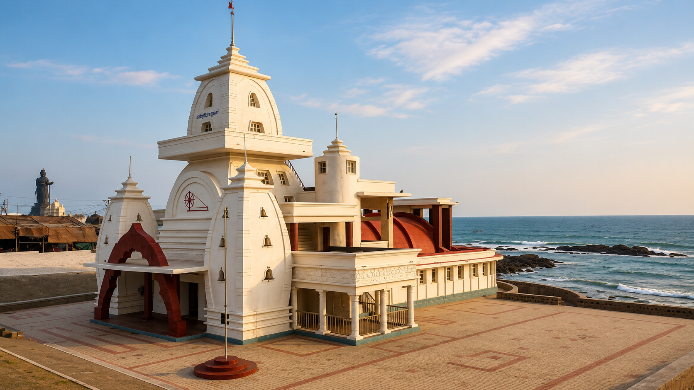
An elegant monument built where Gandhi's ashes rested.
Tamil culture is one of the world's oldest living traditions — a heritage of literature, temple arts, music and philosophy stretching across millennia. Thiruvalluvar's verses sit right at its heart.
Around Kanyakumari, festivals, coastal cuisine and family rituals still carry echoes of that older world. The statue quietly gathers all of it into one silhouette above the sea.